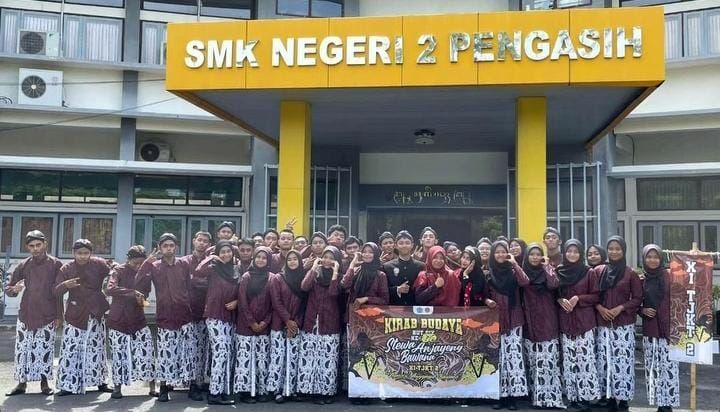
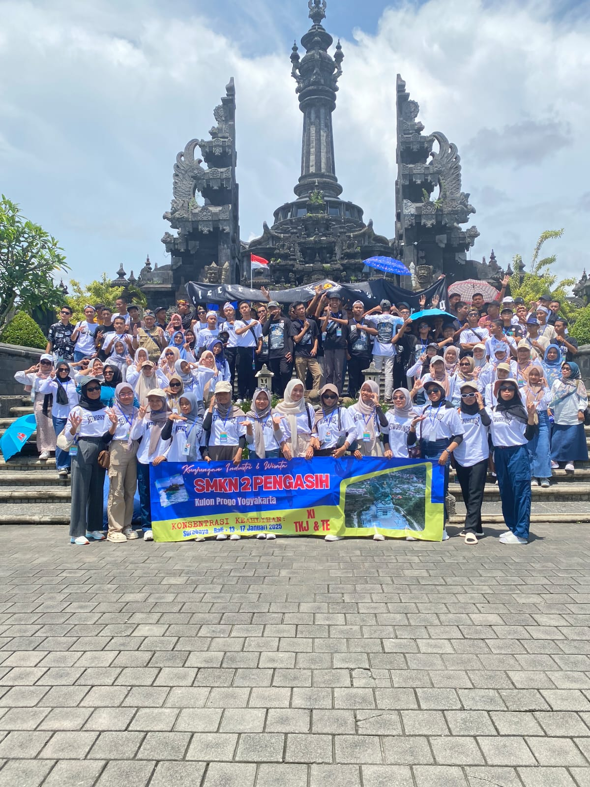
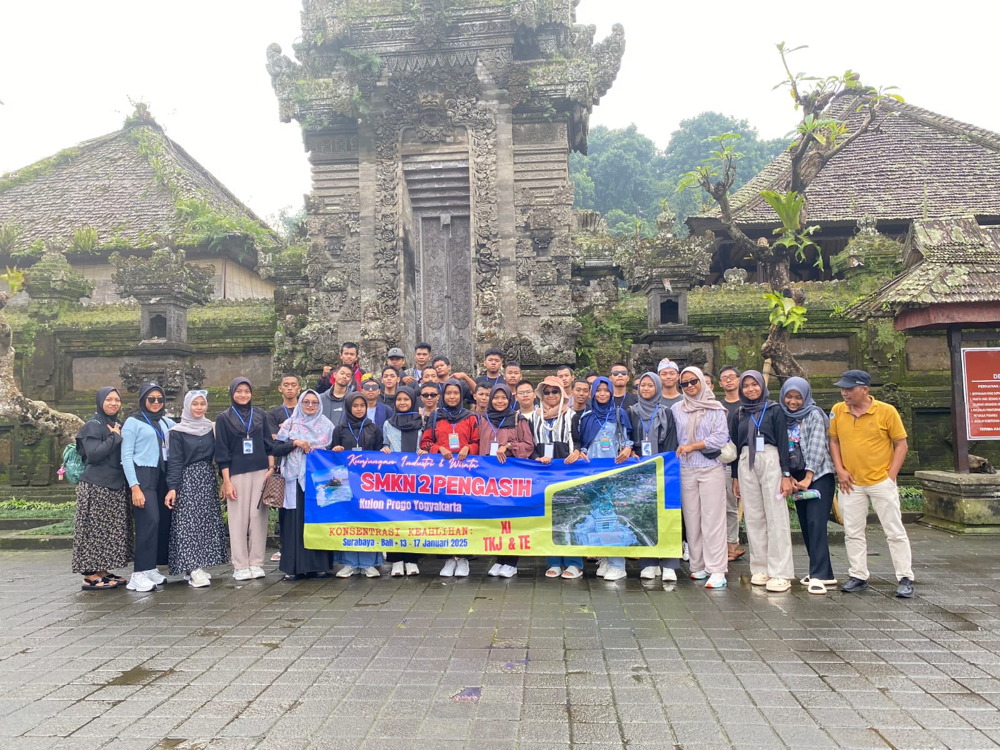
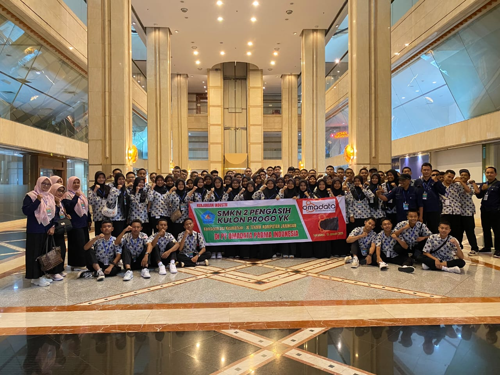
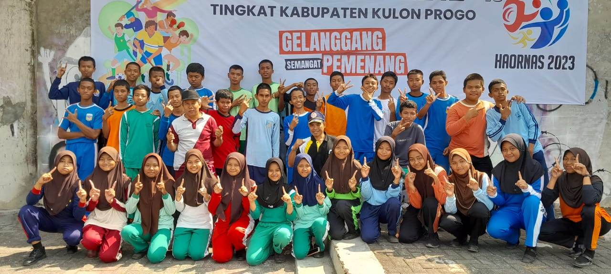
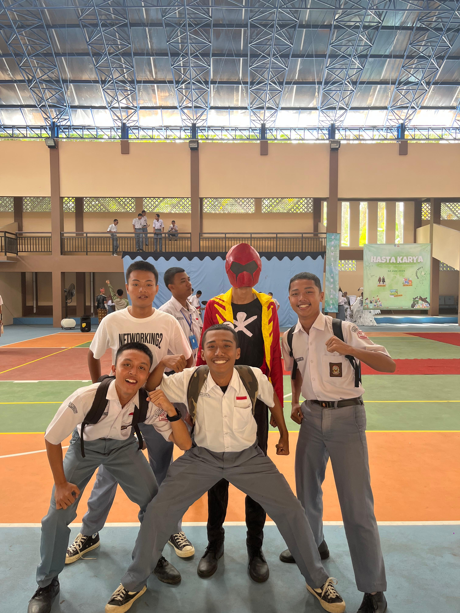

Album Foto

Kirab HUT Diy
Maret 2025

Kunjungan Monumen Bajera
Februari 2025 - Bali

Kunjungan desa panglipuran
Januari 2025 - Bali

Kunjungan Omahdata
Januari 2025 - Surabaya

Hari Olahraga Nasional
Januari 2023 - Kulonprogo

Hasta Karya 2025
Juni 2025 - Kulonprogo

Kunjungan ke monumen bajera
Januari 2025

Bus 2
Januari2025

Kunjungan ke desa panglipuran
januari 2025

Anomali
???
Pasca ujian
???

Hari olahraga nasional
???